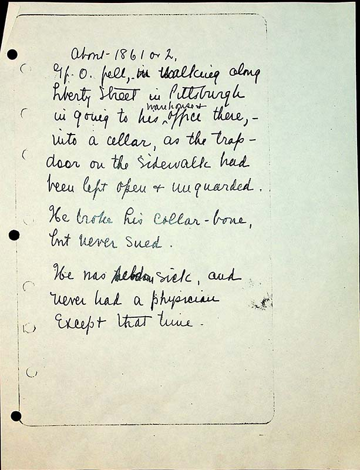

Gf O fell, in walking along Liberty Street in Pittsburgh in going to his ^warehouse & office there, - into a cellar, as the trap door on the sidewalk had been left open and & unguarded.
He broke his collar-bone, but never sued.
He was seldom sick, and never had a physician except that time.